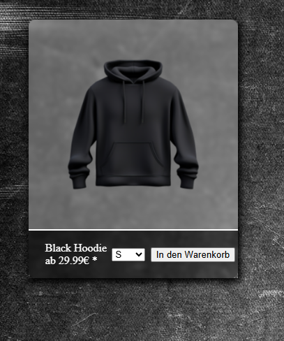
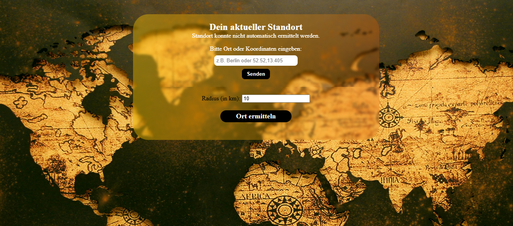

My Projects

Project 2
A website with shop build with Angular and Django.
Still under construction and not yet public
View Project

Project 5
Find the most unlikely Place in a radius based on your Location or Coordinates.
View Project